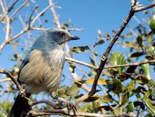

Peninsular Florida LCC - Simple Map Viewer
- Info
- Priorities
- Species
- Land Use
- Threats
- Overview
- CLIP
- Land Use
- Threats
- Partners

Welcome to the Peninsular Florida LCC Simple Map Viewer.
This simple interface is designed to help inform conservation decisions by
allowing you to explore a suite of data layers and models.
You’ll find information on priority natural resources, biodiversity richness,
landscape connectivity and integrity, surface waters and factors
contributing to potential landscape change (sea level rise, urban development).
1 Compare Key Characteristics across Florida
Use one of the tabs above to explore different combinations of key characteristics assessed at the watershed scale across the state.
2 Explore Details for a Watershed
To find out more information about a specific watershed, click on it in the map.
This is the initial release of the Peninsular Florida LCC Simple Map Viewer.
We welcome your feedback. Please contact us
to let us know what we can do to make this viewer more useful for you, or to report
any bugs.
PFLCC DRAFT Priority Resources
Read more about priority resources and access data.